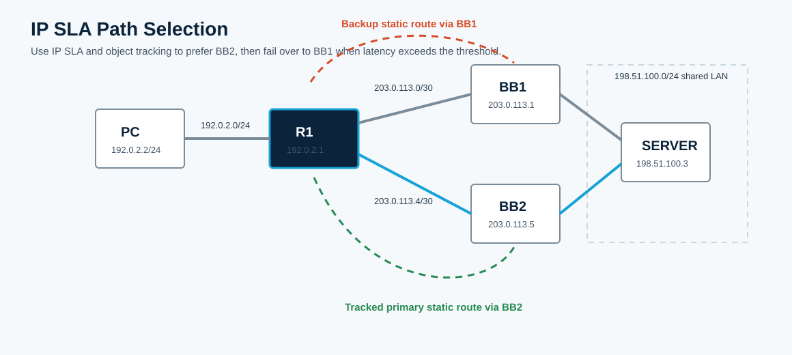

Overview
This lab uses IP SLA and object tracking to select the best path from R1 to the server network. The starting CML topology has OSPF reachability and naturally prefers BB2. You will add tracked static routes so R1 uses BB2 while measured latency is acceptable and fails over to BB1 when the IP SLA threshold is exceeded.
All commands in this guide use the CML interface names shown in the topology.
Topology
R1 reaches the server network through BB1 or BB2. OSPF makes BB2 the preferred path at baseline. The IP SLA operation probes BB2 and controls whether a tracked static route through BB2 remains installed.

Task 1: Confirm the Baseline Path
From PC, trace to SERVER. The initial path should prefer BB2 because OSPF sees it as the lower-cost path.
! PC
traceroute 198.51.100.3
! R1
show ip route 198.51.100.0
show ip ospf neighbor
show ip ospf interface briefTask 2: Configure the IP SLA Operation
On R1, create IP SLA operation 1. It sends ICMP echo probes to BB2's R1-facing address and uses R1's PC-facing address as the source.
! R1
conf t
ip sla 1
icmp-echo 203.0.113.5 source-ip 192.0.2.1
frequency 5
threshold 100
exit
ip sla schedule 1 life forever start-time now
endTask 3: Track the SLA and Install Primary/Backup Routes
Create a tracking object and use it to control the primary static route through BB2. Add a less-preferred backup static route through BB1.
! R1
conf t
track 1 ip sla 1
delay down 10 up 10
exit
ip route 198.51.100.0 255.255.255.0 203.0.113.5 track 1
ip route 198.51.100.0 255.255.255.0 203.0.113.1 2
endTask 4: Verify the Primary Path
Verify that tracking is up, IP SLA is succeeding, and the route points to BB2.
! R1
show track 1
show ip sla statistics
show ip route 198.51.100.0
! PC
traceroute 198.51.100.3Task 5: Force the Backup Path
IP SLA operations cannot be edited in place. Remove operation 1 and recreate it with a one millisecond threshold so the operation transitions to over-threshold and the tracked route is removed.
! R1
conf t
no ip sla 1
ip sla 1
icmp-echo 203.0.113.5 source-ip 192.0.2.1
frequency 5
threshold 1
exit
ip sla schedule 1 life forever start-time now
endWait for the tracking delay to expire, then verify state.
show track 1
show ip sla statisticsTask 6: Final Verification
Confirm that R1 now uses the backup route through BB1 and that PC traffic follows that path.
! R1
show ip route 198.51.100.0
show track 1
! PC
traceroute 198.51.100.3Expected result: R1 installs the static route through 203.0.113.1 with administrative distance 2 after the tracked BB2 route is withdrawn.